1. Introduction
Bienvenue dans cette FAQ (Foire Aux Questions) dédiée aux espaces aériens. Vous trouverez ici les réponses aux questions les plus fréquemment posées.
| Cette FAQ est en cours de développement. N’hésitez pas à nous faire part de vos questions. |
| Les informations fournies ici sont à titre indicatif et ne remplacent pas les documents officiels (cf. Ressources). |
2. Questions fréquemment posées
2.1. Qu’est-ce que je risque à traverser une zone interdite ?
Vous risquez gros : enquête de police, suspension, non prise en charge des assurances, etc.
Voici un simple rappel à l’ordre, concernant un incident qui s’est passée en 2025 en France :
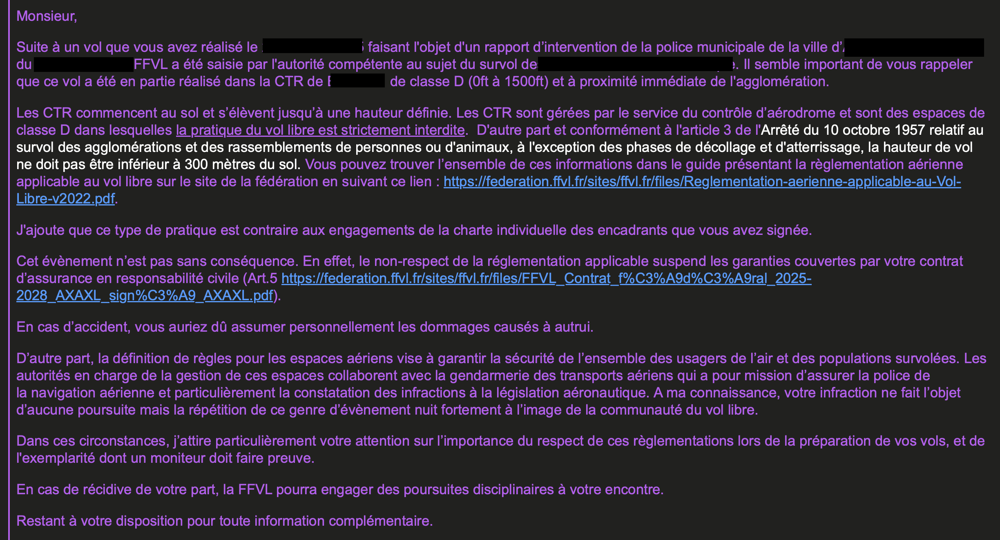
2.2. Quelles sont les règles à l’approche d’un aérodrome ?
Il est rappelé que les aérodromes sont situés en classe G. Lors de son pré-vol, il faut délimiter une zone de 3 nautiques à peut près autour de l’aérodrome et ne surtout pas y voler.
Il existe néanmoins de nombreuses exceptions. Par exemple à Luchon :
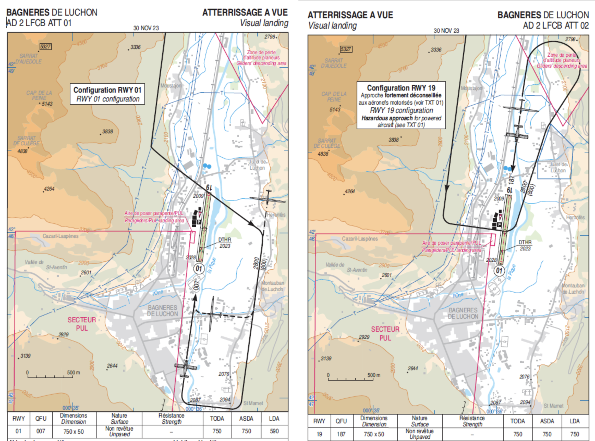
|
Les circuits d’approche de chaque aérodrome figurent dans les cartes VAC (une par aérodrome) disponibles sur le site du SIA. En l’occurrence, concernant Luchon, la carte VAC permet de lever tout doute, dans la mesure où la zone d’atterrissage des PUL (parapentes/ delta) figure expressément, et les circuits d’approche N et S sont prévus pour l’éviter. |
2.3. C’est quoi une NOTAM ?
Une NOTAM (🇬🇧 NOtice To AirMen) est un avis aux aviateurs publié par les autorités aéronautiques pour informer les pilotes des conditions temporaires ou permanentes affectant la navigation aérienne.
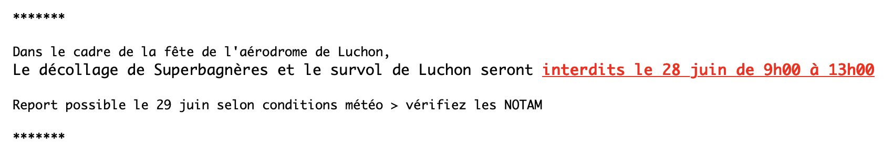
Ils vous sont transmis par vos référents espaces aériens ou vos présidents de club, mais vous devez aussi les consulter vous-même avant vos vols.
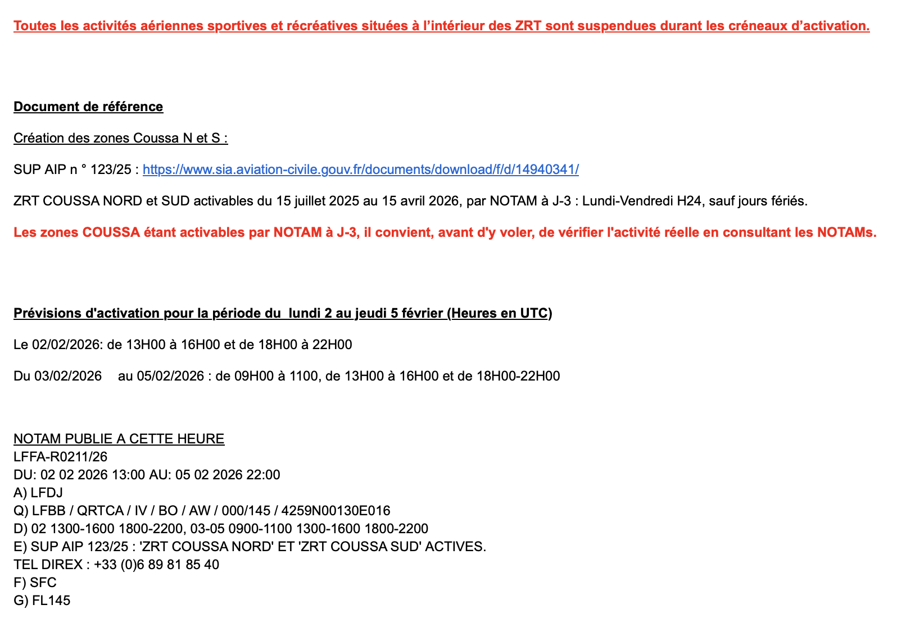
Dans l’exemple ci-dessus, la Sup AIP est réréfencée par son numéro (123/25) ainsi qu’un lien de référence (ici sur un PDF qui permet de la carte aérienne de la zone).
|
Le site le plus pratique pour nous, pour consulter les NOTAM, est ici : https://notaminfo.com/francemap. Le Guide de la consultation des NOTAM en français publié par la SIA est aussi très utile pour comprendre comment lire les NOTAM. |
2.4. Qui appeler pour avoir les horaires d’activation d’un espace aérien temporaire (type ZRT) ?
Les NOTAM mentionnent parfois explicitement le numéro du DIREX à contacter pour avoir les horaires d’activation d’une ZRT.
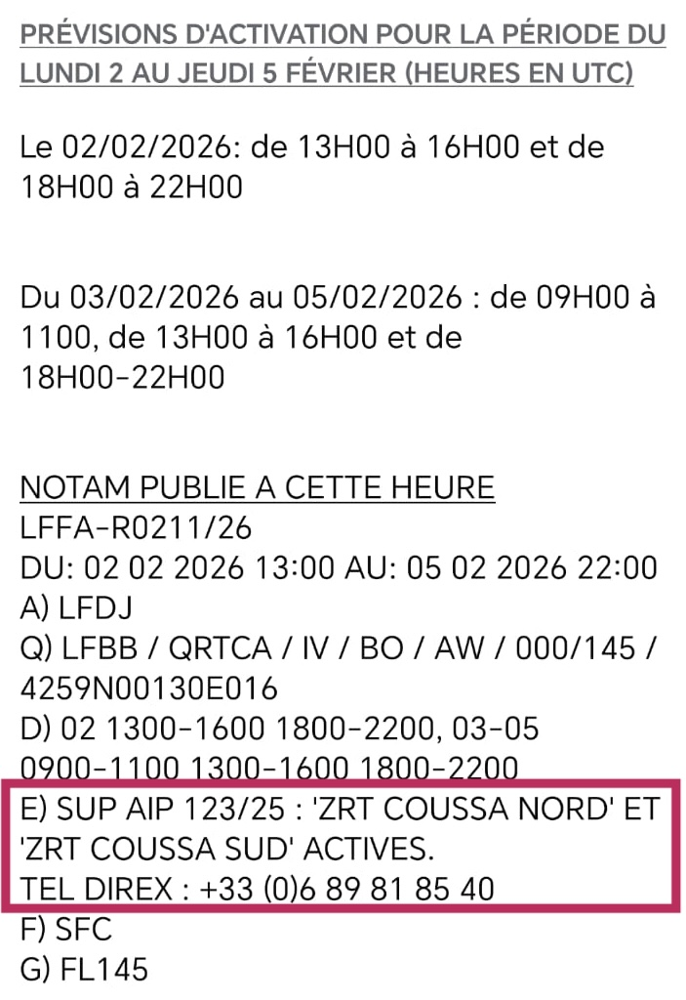
Mais souvent ce n’est pas le cas comme dans l’exemple ci-dessous.
Dans l’exemple ci-dessus, la Sup AIP est réréfencée par son numéro (123/25 indiqué dans le champs E du NOTAM). Sur le site du SIA, allez sur "Préparation de vol" > "SUP AIP Metropole" (si vous cherchez en France métropolitaine) et cherchez le numéro de la Sup AIP (123/2025 dans notre exemple) pour trouver les horaires d’activation de la ZRT :
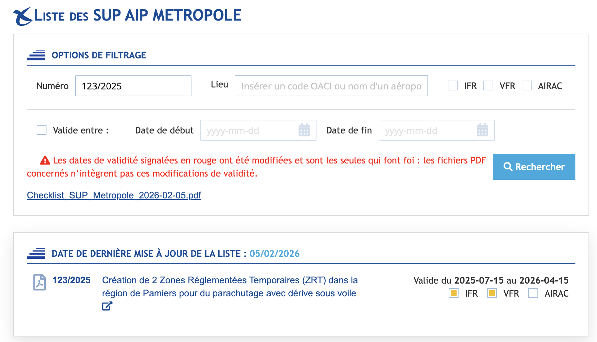
Malheureusement, celle-ci ne donne pas non plus le numéro du DIREX :
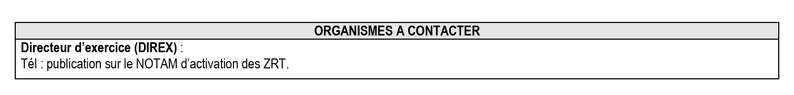
Pour obtenir le précieux numéro à contacter, il faut aller sur le site NOTAM Info et rechercher dans la liste (CTRL+F) le numéro (ici 123/25) pour enfin trouver le numéro du DIREX à contacter :
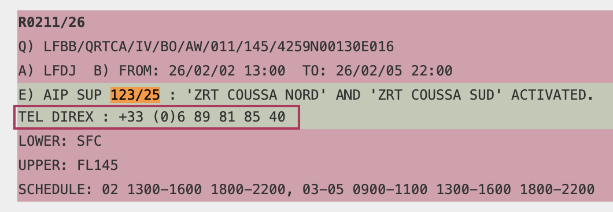
| Le site le plus pratique pour nous, pour consulter les NOTAM, est ici : https://notaminfo.com/francemap. |
| Le Guide de la consultation des NOTAM en français publié par la SIA est aussi très utile pour comprendre comment lire les NOTAM. |
2.5. Comment savoir si j’approche d’un espace aérien réglementé, interdit ou dangereux ?
| Merci à Denis Chardon — Référent Espaces Aériens Zeld’Aude pour cette partie de la FAQ. |
| Avant tout, vous ne devriez pas être dans cette situation. La préparation de votre vol doit vous permettre d’éviter de vous approcher d’un espace aérien réglementé, interdit ou dangereux. |
2.5.1. Nos instruments de navigation
Varios
Sur la plupart des varios modernes il est possible d’obtenir une alerte. Il faut se renseigner dans la notice de son appareil pour savoir comment faire.
Voici un exemple pour un Nav’XL de chez Syride :
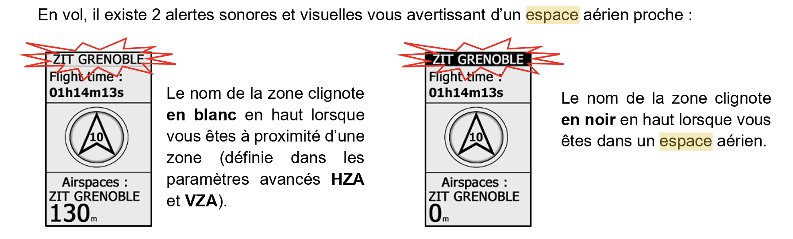
Tablettes et smartphones
Si vous êtes équipés d’une tablette ou d’un smartphone, vous pouvez utiliser des applications de navigation aérienne qui intègrent les cartes aéronautiques et les informations sur les espaces aériens.
| À compléter… |
2.5.2. Signaux visuels
Certains sites réglementés, interdits ou dangereux sont équipés de signaux visuels pour avertir les aéronefs qui s’approchent de ces zones. Ces signaux sont utilisés pour indiquer aux pilotes qu’ils volent sans autorisation dans une zone réglementée, interdite ou dangereuses ou qu’ils sont sur le point de pénétrer dans une telle zone.
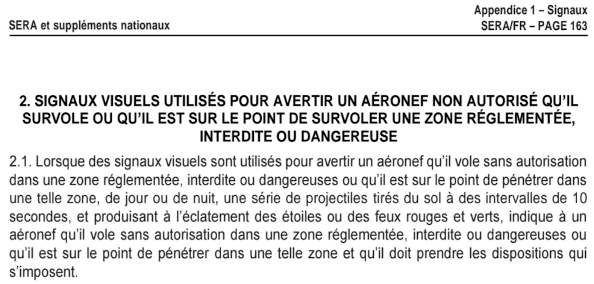
|
Ces signaux peuvent émaner de différentes sources, telles que des installations au sol, des aéronefs ou des systèmes de contrôle aérien. 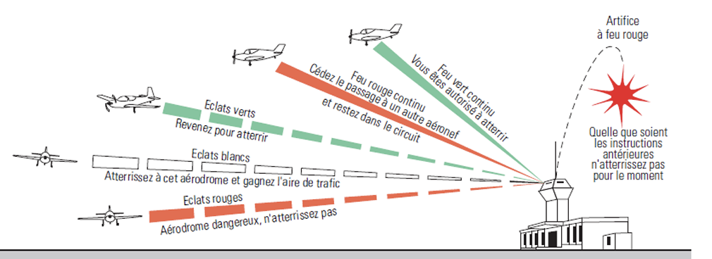 Figure 11. Exemples de signaux visuels
|
3. Questions Générales
3.1. Qu’est-ce qu’un espace aérien ?
Un espace aérien est une région de l’atmosphère définie par des limites géographiques et verticales, soumise à des règles de circulation aérienne spécifiques.
| To be continued… |
3.2. Quels sont les différents types d’espaces aériens ?
Les espaces aériens se classent en plusieurs catégories selon leur utilisation et les règles applicables.
| To be continued… |
4. Réglementation
4.1. Qui réglemente les espaces aériens ?
Les autorités aéronautiques nationales et les organismes internationaux comme l’OACI (Organisation de l’Aviation Civile Internationale) définissent les règles.
| To be continued… |
5. Accès et Utilisation
| To be continued… |
5.1. Comment accéder à un espace aérien contrôlé ?
L’accès à un espace aérien contrôlé nécessite une autorisation préalable et le respect des procédures établies.
| To be continued… |
6. Exemples
6.1. Le site de Tuchan
6.1.1. Le site de Tuchan
Le décolage et l’atterrissage de Tuchan se situent dans une zone de classe D : une TMA. Ce qui implique certaines règles de survol.
Il faut donc consulter les cartes aéronautiques (sur le SIA), ou utiliser une application mobile spécialisée, comme SpotAir pour connaître les règles applicables.
Le site de la FFVL dédié à Tuchan fournit des informations utiles :
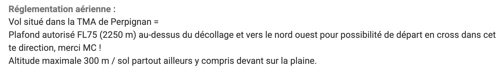
6.1.2. Exemple sur SpotAir
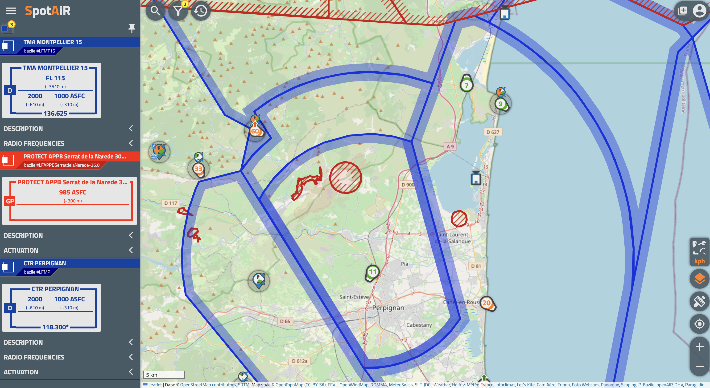
En cliquant dans l’application SpotAir sur les différentes zones, on obtient les informations suivantes :
| Cartouche | Zone | Classe | Règle à respecter en vol libre |
|---|---|---|---|
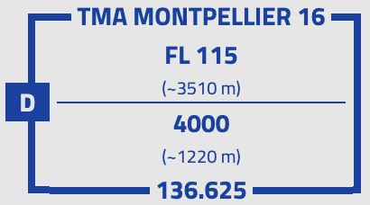 |
TMA Montpellier 16 |
La zone réservée étant entre 4000 pieds (1220m) et la FL115 (3510m), cela implique que le vol est autorisé en dessous de 1220m. |
|
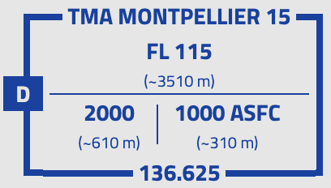 |
TMA Montpellier 15 |
La zone réservée étant entre la plus haute des deux valeurs : 2000 pieds (610m) ou 1000 pieds (310m) au-dessus du sol (ASFC), cela implique que le vol est autorisé en dessous de ces 2 limites. |
|
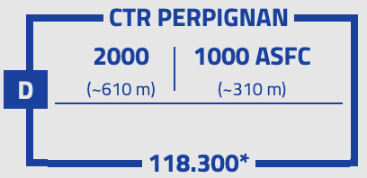 |
CTR Perpignan |
La zone réservée est une CTR et n’a pas de limite basse, donc le vol est interdit dans cette zone. |
|
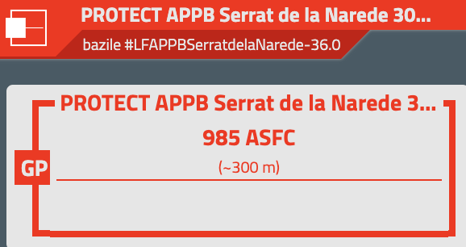 |
Zone de Serrat |
Obligation de survoler la zone 300m au-dessus du sol. ⚠️ ATTENTION : la zone est dans une CTR, donc le vol est interdit dans cette zone. |
|
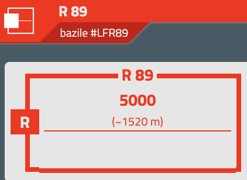 |
R 89 |
Zone réglementée, interdite au vol libre, sauf si elle est inactive. ⚠️ ATTENTION : la zone est dans une CTR, donc le vol est interdit dans cette zone. |
|
Quand la cartouche mentionne 2 chiffres en zone basse (exemple : 1500 ft ASFC / 2000 ft), cela signifie que la limite basse de la zone est la plus haute des deux valeurs. Ce qui est logique si on imagine une zone suivant le relief. Pour plus de détails concernant la lecture des cartouches et des cartes, consultez ce document. |
6.1.3. Le Service d’Information Aéronautique
Le SIA (Service d’Information Aéronautique) est le site officiel à consulter pour préparer ses vols. Il fournit les cartes aéronautiques et les informations sur les espaces aériens.
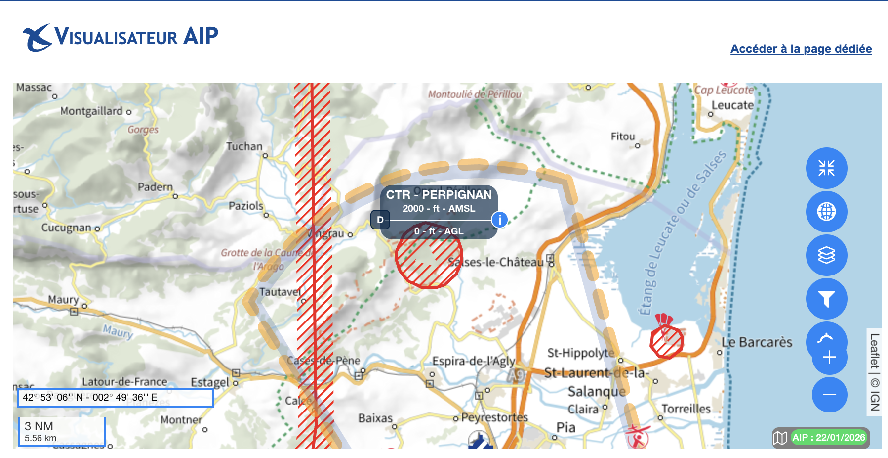
| Les informations sur les sites de vol libre sont un peu difficiles à obtenir sur le site du SIA. |
6.1.4. C’est plus facile en 3D
Vous pouvez aussi télécharger les cartes aéronautiques et les visualiser en 3D avec {GoogleEarth}.

| Les explications pour utiliser Google Earth avec les cartes aéronautiques sont disponibles ici : https://parapente.ffvl.fr/lespace_aerien_dans_google_earth. |
6.2. Le site de Luchon
| To be continued… |
7. Contact
Pour toute question supplémentaire, n’hésitez pas à nous contacter.
Appendix A: Ressources
Pour plus d’informations, consultez les documents officiels des autorités aéronautiques :
-
Liste des référents espaces aériens FFVL 🇫🇷 PDF
|
Conversions
Les hauteeurs ou les alititudes sont généralement exprimées en pieds (ft) dans le milieu de l’aviation. Pour convertir des pieds en mètres, utilisez la formule suivante : 1 pied = 0,3048 mètre Exemple : 1000 ft = 1000 x 0,3048 = 304,8 m. Pour faire simple on dicise par 3 pour obtenir une valeur approchée en mètres. |
Appendix B: Acronymes
AIP (🇬🇧 Aeronautical Information Publication) -– Information Aéronautique Permanente : publication officielle contenant toutes les informations aéronautiques essentielles pour les pilotes. Elles sont publiée par le SIA. Ce sont des données "permanentes", mais peuvent être modifiés. D’où les Sup AIP (Suppléments à l’AIP) qui sont des informations temporaires qui s’ajoutent à l’AIP.
AMSL (🇬🇧 Above Mean Sea Level) : altitude au-dessus du niveau moyen de la mer (précision sur une altitude).
ASFC (🇬🇧 Above SurFaCe) : altitude au-dessus du relief (précision sur une altitude).
CFD
Classe de zone aérienne : classification des espaces aériens selon les règles de vol et les services de contrôle aérien applicables. Les classes vont de A à G, chaque classe ayant des règles spécifiques pour les pilotes de vol libre (cf. tableau ci-dessous). Le plus simple à retenir est que les classes A, B, C et D sont interdites au vol libre.
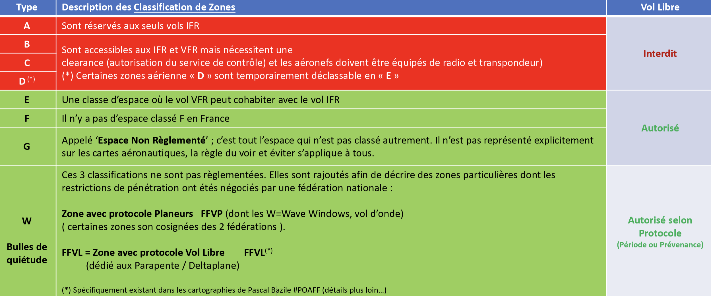
| Dans le milieu de l’aviation, ces classes sont désignées par l’alphabet international (Alpha, Bravo, Charlie, Delta, Echo, Foxtrot, Golf). |
CNFAS (Comité National des Fédérations de l’Aviation Sportive) : comité national chargé de représenter les intérêts des sports aériens auprès des autorités aéronautiques et de coordonner les actions des différentes fédérations sportives aériennes. Site: https://cnfas.fr/.
CTR (🇬🇧 Controlled Traffic Region) : zone de contrôle aérienne autour d’un aérodrome, interdite au vol libre.
CCRAGALS (Comités Consultatifs Régionaux de l’Aviation Générale et de l’Aviation Légère et Sportive) : sont chargés d’émettre un avis sur les projets de création, modification ou suppression, de zones aériennes.
DIREX (DIRecteur des EXercices) : Responsable de l’activation ou non d’une zone temporaire (d’exercice). C’est la personne à contacter avant d’aller voler dans un secteur concerné par une ZRT ou un RTBA par exemple.
DGAC (Direction Générale de l’Aviation Civile) : autorité nationale responsable de la réglementation et de la sécurité de l’aviation civile en France.
DSAC (Direction de la Sécurité de l’Aviation Civile) : un service à compétence nationale rattaché à la DGAC, elle-même rattachée au ministère de l’Écologie. Elle est organisée en directions interrégionales (la DSAC Sud pour l’Occitanie par exemple).
FFVL (Fédération Française de Vol Libre] : fédération sportive française qui regroupe les pratiquants de vol libre (parapente, deltaplane, etc.) et représente leurs intérêts auprès des autorités aéronautiques. Site : https://federation.ffvl.fr/.
FL115 (🇬🇧 Flight Level 115) : niveau de vol 115, soit une altitude de 11 500 pieds (environ 3510 m) au-dessus du niveau moyen de la mer.
GP (🇬🇧 Glider Prohibited) : Zone de protection des Parcs ou Réserves Naturels protégés via décret gouvernemental. Se renseigner sur les dates ou périodes d’activation.
NOTAM (🇬🇧 NOtice To AirMen) : avis aux aviateurs publié par les autorités aéronautiques pour informer les pilotes des conditions temporaires ou permanentes affectant la navigation aérienne.
OACI (Organisation de l’Aviation Civile Internationale) : agence spécialisée des Nations Unies qui établit les normes et les réglementations pour l’aviation civile internationale.
PUL (Planeur Ultra-Léger) : C’est notre catégorie d’aéronef. Pour y appartenir, il faut décoller avec la seule force musculaire, faire moins de 250 kg et être non motorisé.
R (Réglementée ou 🇬🇧 Restricted) : Il s’agit typiquement des zones d’entraînement de la Défense nationale. Cf. RTBA et ZRT. Lorsque la zone est active, il est bien entendu absolument interdit d’y pénétrer.
RTBA (Réseau Très Basse Altitude) : réseau de zones d’entraînement de la Défense nationale.
SERA (🇬🇧 Standardised European Rules of the Air) : règles de l’air standard, éditée en France par la DGAC. Site : https://www.ecologie.gouv.fr/sites/default/files/documents/sera_complet_version17012026.pdf
SIA (Service d’Information Aéronautique) : service de l’aviation civile qui fournit les cartes aéronautiques et les informations sur les espaces aériens. Site : https://www.sia.aviation-civile.gouv.fr/.
Sup AIP (🇬🇧 Supplement to Aeronautical Information Publication) Suppléments à une AIP, notamment pour mettre à jour par exemple des horaires et dates d’activation.
TMA (🇬🇧 Terminal Maneuvering Area) : zone de contrôle aérienne autour d’un aérodrome, où les pilotes doivent respecter des règles spécifiques de vol.
VAC (🇬🇧 Visual Approach Chart) : fiches d’approche à vue éditées par le SIA. Elles décrivent les procédures VFR (entrée/sortie de circuit, fréquences, altitude de circuit, QFU, points de report, obstacles, etc.) de chaque aérodrome français.
VFR (🇬🇧 Visual Flight Rules) : règles de vol à vue, utilisées pour les vols en conditions météorologiques favorables.
ZRT (Zone Réglementée Temporaire) : zone interdite au vol libre, mais autorisée pour les vols spécifiques (ex: exercices militaires).